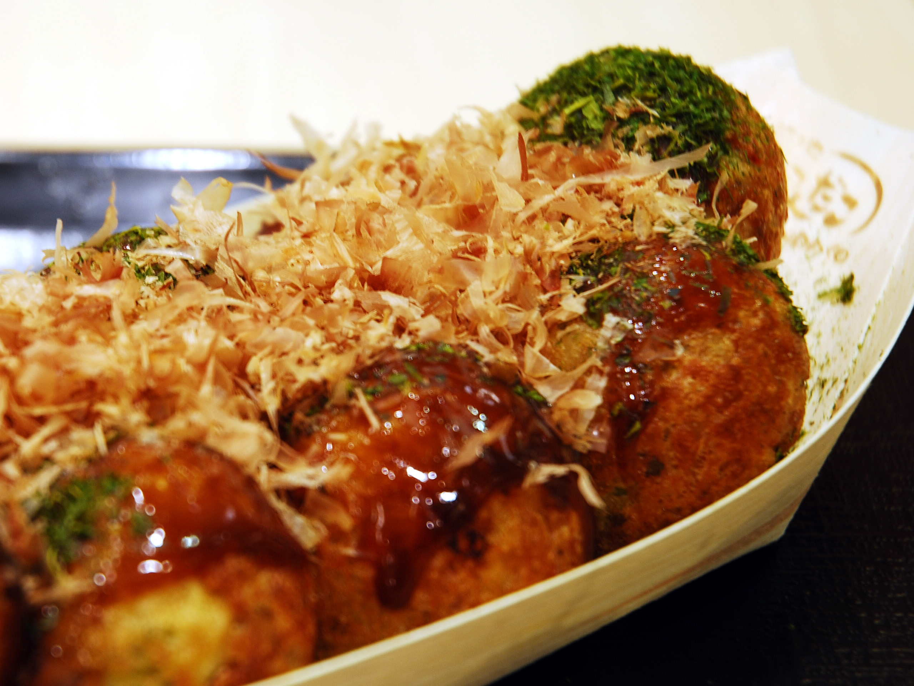

TAKOYAKI
Japanese Octopus Pancake Balls

A delicious Japanese street food that originated in Osaka. Crispy outer crust with a creamy rich savory inside.
- Prep time: 15 mins
- Cook time: 10 mins
- Total time: 25 mins
- Serves: 24 balls
Ingredients
- Batter:
- 100 g cake flour/plain flour
- 1 tsp soy sauce
- 1/2 tsp salt
- 340 ml cold water
- 1 egg - beaten
- Filling:
- 80 g boiled octopus - cut into bite size pieces
- 2 tbsp bonito powder (optional)
- 2 tbsp benishouga (pickled ginger)
- 2 stalks spring onion - chopped finely
- 4 tbsp tenkasu (fried tempura flour)
- Toppings:
- takoyaki sauce
- Japanese mayonaise - Kewpie
- aonori (green seaweed flakes)
- katsuobushi (bonito flakes)
Steps
- 1. Mix dashi powder with water and set aside.
- 2. In a large bowl, combine flour, salt, dashi water and mix well. Add in soy sauce, beaten egg and whisk until combined.
- 3. Generously grease the takoyaki pan and set it on the gas stove on medium low heat.
- 4. Pour the batter into the holes fully. If you like large takoyaki, fill the pan fully with the batter.
- 5. Distribute octopus, bonito powder, pickled ginger, tempura flour and spring onions into each batter.
- 6. Using two bamboo skewers, flip the takoyaki balls and shape them into balls. Fill with more batter if necessary.
- 7. Cook until golden brown.
- 8. Remove the balls and place onto a plate
- 9. Drizzle with takoyaki sauce, mayonaise, seaweed flakes and katsuobushi.
- 10. Serve immediately.